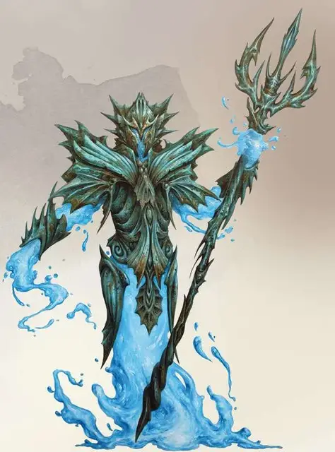

Водный элементальный мирмидон
Water Elemental Myrmidon
Средний Элементаль, нейтральный

Класс Доспеха 18 (латы)
Хиты 127 (17к8 + 51)
Скорость 40 футов, плавая 40 футов
| мод | спас | ||
|---|---|---|---|
| СИЛ | 18 | +4 | +4 |
| ЛОВ | 14 | +2 | +2 |
| ТЕЛ | 15 | +2 | +2 |
| мод | спас | ||
|---|---|---|---|
| ИНТ | 8 | −1 | −1 |
| МДР | 10 | +0 | +0 |
| ХАР | 10 | +0 | +0 |
Сопротивление урону кислота; дробящий, колющий, рубящий от немагических атак
Иммунитет к урону яд
Иммунитет к состояниям окаменение, отравление, сбивание с ног, паралич
Чувства тёмное зрение 60 футов, пассивное Восприятие 10
Языки Акван
Опасность 7 (2900 опыта)
Бонус мастерства +3
Особенности
Языки. Акван и один язык по выбору его создателя
Магическое оружие. Атаки оружием мирмидона являются магическими.
Действия
Мультиатака. Мирмидон совершает три атаки трезубцем.
Трезубец. Рукопашная или дальнобойная атака оружием: +7 к попаданию, досягаемость 5 фт. или дистанция 20/60 фт., одна цель. Попадание: 7 (1к6 + 4) колющего урона, или 8 (1к8 + 4) колющего урона, если используется двумя руками.
Замораживающие удары (перезарядка 6). Мирмидон использует Мультиатаку. Каждая успешная атака наносит дополнительно 5 (1к10) урона холодом. Скорость цели, поражённой одной или несколькими этими атаками, уменьшается на 10 фт. до конца следующего хода мирмидона.
Описание
Элементальные мирмидоны – элементали, призванные и связанные магией в ритуально созданных пластинчатых доспехах. В такой форме они не помнят о своём прежнем существовании в форме свободного элементаля. Они существуют только для того, чтобы следовать приказам своих хозяев.